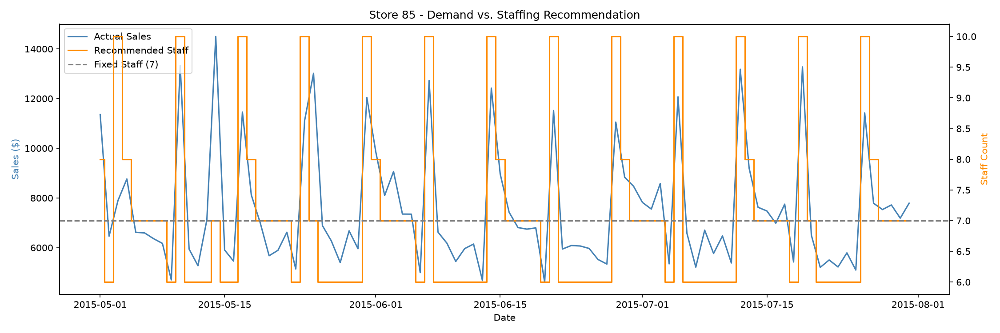
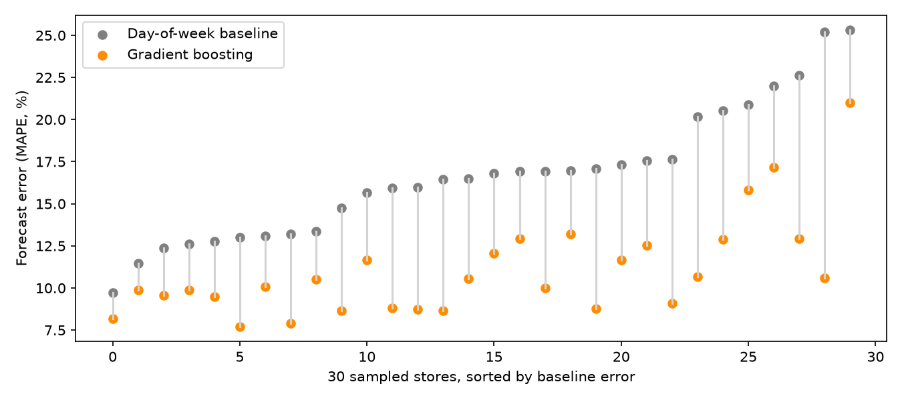

Demand-Driven Staffing Optimization
Executive Summary - Joanna Ni
Can staffing to predicted demand, instead of a flat schedule, protect service on busy days without raising labor cost?
16.7% → 11.1%
AVG. FORECAST ERROR (MAPE), BASELINE VS. MODEL
30 / 30
STORES WHERE THE MODEL BEAT THE BASELINE
+0.4%
AVG. LABOR COST, DEMAND-DRIVEN VS. FIXED
30.5%
OF DAYS A FIXED SCHEDULE WOULD UNDERSTAFF
Approach
- Trained a gradient boosting model on Rossmann Store Sales data (Kaggle; 1,115 stores, daily) using day of week, promotions, and holiday flags. Tested on the final 3 months, which the model never saw.
- Converted each day's forecast into a staffing level with a documented assumption (2 minimum staff + 1 per $1,500 in predicted sales; $15/hr, 8-hour shifts). Real staffing data is not public.
- Compared against a flat schedule sized to average demand. Developed on one store (Store 85), then repeated on a random sample of 30 stores.
Key findings
- The forecast improves in every store tested. Average error fell by about one-third (16.7% to 11.1% MAPE), and the model beat the day-of-week baseline in all 30 stores.
- Cost is roughly neutral; risk is not. Demand-driven staffing cost +0.4% on average (cheaper in 14 of 30 stores), while a flat schedule would be understaffed on 30.5% of days.
- Store 85 deep dive: model error 13.0% to 8.7%; demand-driven staffing cost $2,160 more (+2.8%) over 92 days, but a 7-person flat schedule would be short on 23 of 92 days, all high-demand days.
Store 85: demand vs. staffing recommendation

The flat schedule (gray) cannot follow the weekly demand spikes; the recommended staffing (orange) does.
All 30 sampled stores: forecast error, baseline vs. model

Each pair is one store; the model (orange) sits below the baseline (gray) in every store.